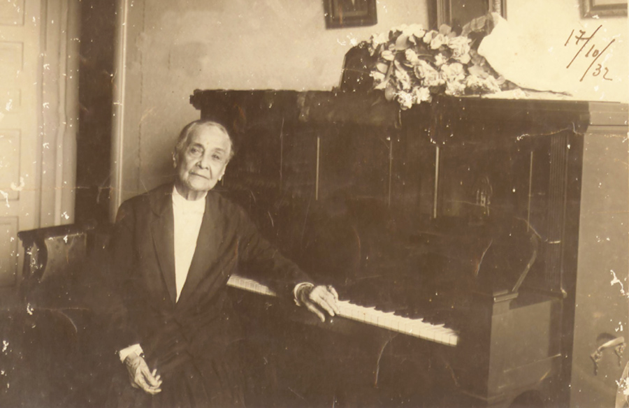

Chiquinha Gonzaga (1847 - 1935)
Francisca Edviges Neves "Chiquinha" Gonzaga foi uma compositora, maestrina, instrumentista e abolicionista. Foi a primeira mulher a reger uma orquestra no Rio de Janeiro. Foi pioneira no choro e é conhecida por compôr a marcha "Ó abre alas".
